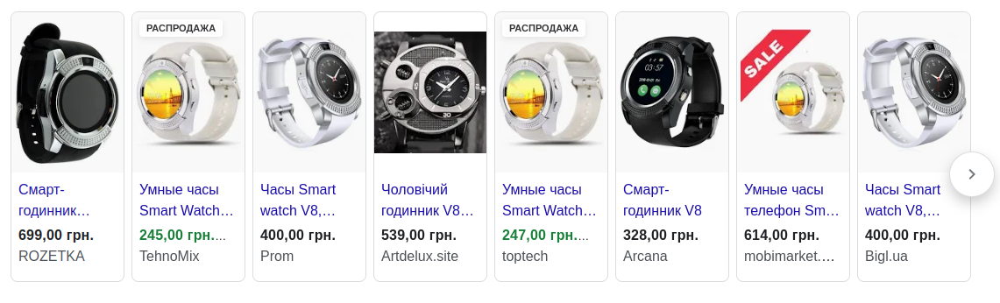
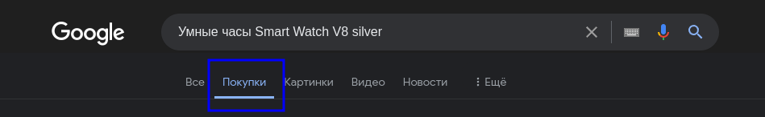
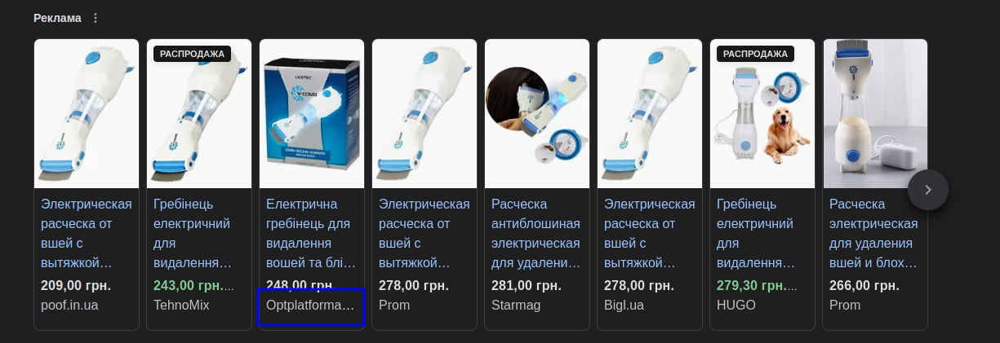
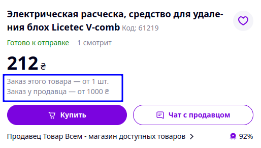

Открываем вкладку инкогнито в браузере Google Chrome, сделать это можно в меню либо комбинацией клавиш Ctrl + Shift + N. Скопировав название товаров с таблицы для анализа, вставляем его в форму Google Поиска. Перед нами будет показан блок торговый объявлений, который имеет следующий вид: 
В случае если блок имеет меньше элементов, либо нет стрелки для просмотра остальных предложений, необходимо закрыть вкладку, и открыть новую (инкогнито), пока не будет показан блок как на примере выше. Если более 3 попыток не привели к желаемому результату, перейдите в раздел Google Покупки: 
Конкурент с минимальной ценой
Задача аналитика найти конкурента с самой минимальной ценой, который продает идентичный товар. Нам необходимо учитывать следующие моменты для успешного поиска конкурента
Розничный продавец
Проверяем сайт конкурента, если товар можно купить только оптом, данный магазин пропускаем. Если в названии сайта присутствует слово opt или optom, кроме этого на странице товара может присутствовать информация что продажа только оптом. 
Минимальный заказ
Информация о минимальном заказе часто присутствует на PROM, под ценой товара. Если значение минимального заказа больше цены на товар, пропускаем магазин. 
Правило одного конкурента - Уменьшение цены
Если цена конкурента ниже нашей более чем на 20% и такой конкурент один. Мы пропускаем магазин, и берем в работу следующего конкурента с более высокой ценой.
Правило одного конкурента - Увеличение цены
Если цена конкурента выше нашей более чем на 20% и такой конкурент один. Мы пропускаем магазин, и берем в работу следующего конкурента с более низкой ценой.
Сайты
При поиске конкурента не берем в расчет сайты: Техномикс, Топтовары, ТопТеч, Shafa